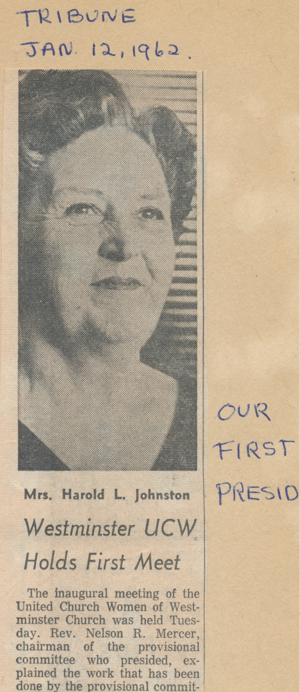
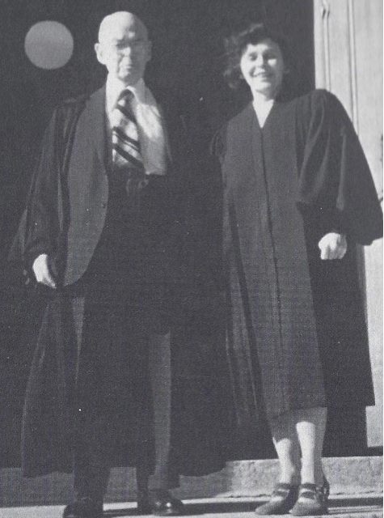

-1-MasterItem.svg)
Stories of Westminster United Church & its People / Page
192
Table
of Contents
The conclusion of this rethinking was that it was time for women to be
involved in the total mission of the Church, not only in their historical roles
but
also in ground level maintenance and administration of the church at all its
levels, General Council, Conferences, Presbyteries and Congregations. Out with
Sessions and Elders (the province of Men alone) in with general boards
with equal participation, women and men.
Even the Moderator could be a woman. Westminster’s own Lois Wilson
(pictured with her Dad, Dr. E.G.D. “Dink” Freeman, was the first to be
so honoured. (1980-1982) (Lois’s Mom was an inexhaustible leader
in our Sunday School and C.G.I.T. for a number of years.)
This change in thinking was formalized in January 1st of 1962 as ‘United
Church Women.’ The stated purpose of this new grouping: “To unite women
of the congregation for the total mission of the church and to provide a
medium through which we may express our loyalty and devotion to Jesus
Christ in Christian witness, study, fellowship and service.”
In 1962 some unknown hand, a person with a sense of history, began
to keep a scrapbook. The information which follows comes from that book.
We introduced The United Church Women as an organizational platform
for women's work in Westminster in 1962.: Mrs. J. Stewart McInnes presented
the slate of nominations: Mrs. Harold L. Johnson as President; Mrs. Charles
Gerrie, Mrs. Murray Auld, and Mrs. James E. Wilson Vice Presidents;
Mrs. J.S. Henderson Recording Secretary, Mrs. Douglas Arnott,
Corresponding Secretary ; and Mrs. Robert Jeske Treasurer.
Westminster’
s
Women of NOte


Above: Mrs. Harold L. Johnson-President 1962-63.
(Double-click for full clipping.)